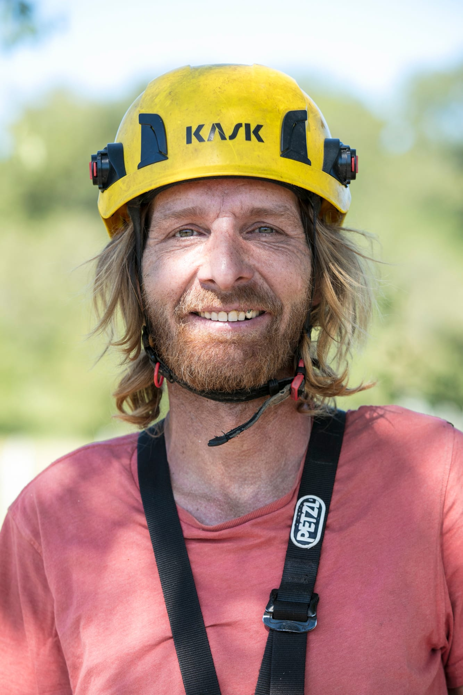

Seil & Plattform
Seil & Plattform
Baumpflege & Baumschnitt
Sanfter Schnitt, begründeter Rückschnitt, Kronenlichtung, Entfernung von Totholz und Entlastung der Hauptäste zur Erhaltung der Gesundheit und Langlebigkeit des Baumes.
Mehr erfahrenSpezialisten für fachgerechten Baumschnitt in Seiltechnik und mit Hubplattform, schonende Fällung und Baumpflege − wir stellen unsere Kompetenz Ihren Grünflächen zur Verfügung. Professionelle und menschliche Haltung, respektvoll gegenüber dem Pflanzengut und Ihrer Sicherheit.
Vom jahrhundertealten Stadbaum bis zum Obstgarten − wir verfügen über die nötigen technischen Fähigkeiten und das passende Equipment, um präzise und rücksichtsvoll einzugreifen.
Seil & Plattform
Sanfter Schnitt, begründeter Rückschnitt, Kronenlichtung, Entfernung von Totholz und Entlastung der Hauptäste zur Erhaltung der Gesundheit und Langlebigkeit des Baumes.
Mehr erfahren Pflanze & Obstgarten
Pflanze & Obstgarten
Fruchtbare Schnittmethode angepasst an Obstbaumarten, Verjüngung alter Bäume, ästhetischer Schnitt von Hecken und Beachtung der saisonalen Blüte.
Mehr erfahren Hohe Sicherheit
Hohe Sicherheit
Vorsichtiger teilweiser Abbau über Seilrückhalt, wenn der Bodenraum begrenzt oder gefährlich ist. Mechanisches Stubfenfresen 30–40 cm unter dem Boden, damit der Garten sofort weitergenutzt werden kann.
Mehr erfahren Grünflächen
Grünflächen
Terrassengestaltung, Pflanzen einheimischer Bäume, Anlage von Hecken mit Wildblumen, Erhalt von Lebensräumen und Holzkonstruktionen für den Garten.
Mehr erfahren Logistik
Logistik
Schneller Abtransport von Schnittgut, Ästen und Holzhackschnitzeln mit unserem Transportfahrzeug bis 4 Tonnen. Winterdienst zum Räumen und Sicherung von Zufahrten.
Mehr erfahrenWir nehmen uns die Zeit, zuzuhören, Ihre Grünflächen zu beobachten und Ihnen transparent und ohne unnötige Eingriffe zu beraten.
Kontakt aufnehmenEine seit der Kindheit gepflegte Leidenschaft und zertifizierte Kompetenzen zum Schutz des baumreichen Erbes der Westschweiz.

In einer Blumenfamilie aufgewachsen, hatte er schon immer die Leidenschaft für die Pflanze. Als Absolvent der Lullier-Schule, seit mehreren Jahren Fachmann, hat er umfangreiche Erfahrung in der Arboristik und im Landschaftsbau gesammelt, bevor er sein eigenes Unternehmen ASG Baumdienste Genf gegründet hat.
Polyglott und tief auf Ihre Bedürfnisse eingehend, schlägt er die massgeschneiderte Lösung für jeden Baum und jede Situation vor und setzt sie um.
Eigentümer von Villen und privaten Gärten, die Sorge um die Sicherheit und Schönheit ihrer Bäume tragen.
Für nachhaltiges Management, Sicherung von Hofflächen und Grünanlagen von Unternehmen.
Vertrauenswürdiger technischer Partner für alle Baustellen, die komplexe Arbeiten in größeren Höhen erfordern.
Mit Sitz in Vernier ist ASG Baumdienste Genf schnell und professionell im gesamten Kanton Genf sowie im Kanton Waadt im Einsatz.
Erfahren Sie mehr über unsere Arbeiten im fachgerechten Baumschnitt, schonenden Fällung und Anlagen mit Sorgfalt.


Beschreiben Sie uns Ihr Bauprojekt oder Ihre Situation. Bendik Häuserman wird Ihnen präzise, rücksichtsvoll und rasch antworten.
Dieses Formular bereitet Ihre Nachricht sofort für bendik.hauserman@bluewin.ch auf, ohne
Vermittler und ohne Speicherung personenbezogener Daten.